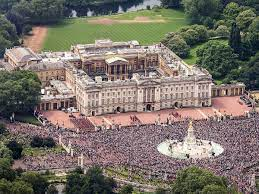

Engeland
Buckingham palace
Buckingham Palace is de officiële residentie van de Britse monarch in City of Westminster, Londen. Als de koning aanwezig is, wappert de koninklijke standaard op het middelste paviljoen; is hij er niet, dan wordt de Union Jack gehesen. Er werken dagelijks ruim 300 mensen aan de koninklijke hofhouding.
De witte symmetrische gevel van het paleis leent zich uitstekend als het decor voor ceremonieën. Jaarlijks groeten de Windsors de bevolking vanaf het balkon (dit al sinds 1851). Het paleis heeft 775 kamers, waarvan 78 badkamers. De paleisgevel is 108 meter breed en het gebouw is 120 meter diep, met een hoogte van 24 meter. De oppervlakte bedraagt 77.000 vierkante meter, het heeft 1514 deuren en ruim 760 vensters die om de zes weken worden gereinigd. De Koninklijke tuin heeft een oppervlakte van 40 hectare. Elektriciteit is er sinds 1883. Er is een kapel, een dokterskabinet, een zwembad en een cafetaria voor het personeel. De grootste zaal is de balzaal (36,6 x 18 x 13,5 m); hier vinden staatsdiners plaats. Staatshoofden slapen in de Belgische suite; deze werd gebouwd in opdracht van koningin Victoria voor haar oom, Leopold I van België.

Buckingham Palace is, sinds George III het kocht, meerdere malen verbouwd en vergroot. Sinds 1993 zijn gedeelten van het paleis toegankelijk voor het publiek. Een van de mooiste zalen is de troonzaal, waar de troon van de koning staat. Ook de tronen van zijn ouders en grootouders staan hier. In Buckingham Palace bevindt zich een gedeelte van de Koninklijke Collectie, met schilderijen van onder anderen Rembrandt, Rubens, Van Dyck, Vermeer, Poussin, Canaletto en Claude Lorrain. Er staan ook sculpturen van Canova en Chantrey, een collectie Sèvres-porselein en Brits en Frans meubilair.

Oorspronkelijk heette het gebouw 'Buckingham House', het werd in 1703 gebouwd voor John Sheffield, hertog van Buckingham. Koning George III kocht het pand in 1762, van diens nakomeling Charles Sheffield, als een privéwoning voor koningin Charlotte; het werd bekend als 'The Queen's House'. Sinds 1837 doet het dienst als residentie. Koningin Victoria was de eerste monarch die het paleis permanent bewoonde. Het huidige aanzicht dateert van 1913, toen koning George V de voorgevel liet moderniseren door architect Aston Webb.
De King's Guard symboliseert de functie van hoofd van Defensie van de vorst. De koninklijke wacht wordt meerdere keren per dag afgelost. Kenmerkend voor de Britse paleizen is dat dit 's morgens met een uitgebreid ceremonieel geschiedt. In de winter geschiedt dit om de andere dag. De aflossing van de wacht is een toeristische attractie. Dit eeuwenoude ceremonieel is een voorbeeld van de tradities die nog steeds leven aan het Britse hof.